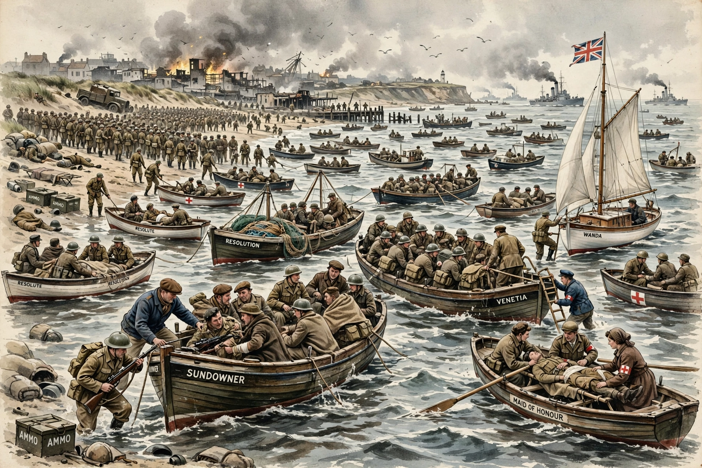

The Dunkirk evacuation, codenamed Operation Dynamo, was the evacuation of more than 338,000 Allied soldiers during the Second World War from the beaches and harbour of Dunkirk, northern France, between 26 May and 4 June 1940.

After the German breakthrough at Sedan and advance to the Channel, the British Expeditionary Force and French First Army were cut off in a pocket around Dunkirk. A controversial German halt order bought time to prepare the evacuation.
About 800–1,200 vessels of all kinds took part, including requisitioned civilian craft — fishing boats, pleasure craft, lifeboats and paddle steamers such as Medway Queen — crewed by naval personnel and civilians. Most troops were actually lifted from the harbour mole by destroyers and larger ships.
Far more men were rescued than expected — Churchill called it a 'miracle of deliverance' while warning that 'wars are not won by evacuations'. Heavy equipment was abandoned, and French rearguard troops were largely captured.